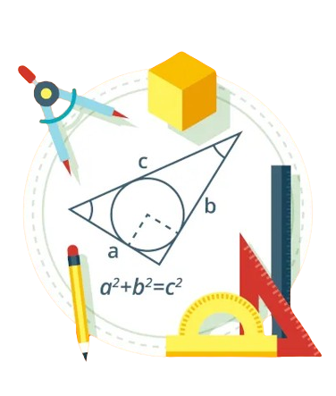
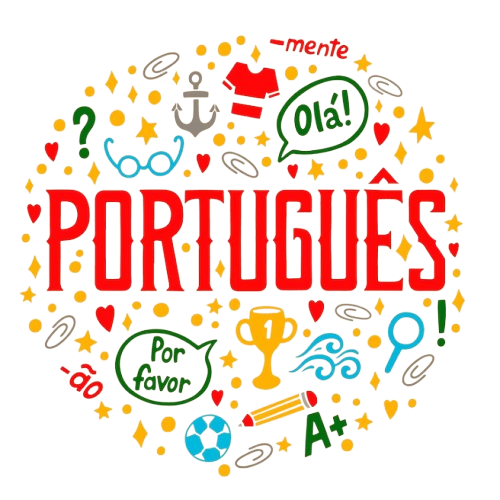

Introdução
Bem-vindo ao Mundo Educação, um portal dedicado a enriquecer o aprendizado e a curiosidade de estudantes de todas as idades. Aqui, você encontrará conteúdos abrangentes e bem elaborados sobre diversas disciplinas escolares, desde Matemática e Ciências até História e Literatura. Nosso objetivo é mostrar como o conhecimento adquirido nas salas de aula é essencial não apenas para o seu desenvolvimento acadêmico, mas também para compreender o mundo ao seu redor e enfrentar os desafios da vida cotidiana. Descubra conosco por que cada matéria tem um papel fundamental na formação de um cidadão crítico e preparado para o futuro. Venha explorar e entender a verdadeira importância das matérias escolares!
Nossas máterias
 |
 | |
 |
 | |
 |